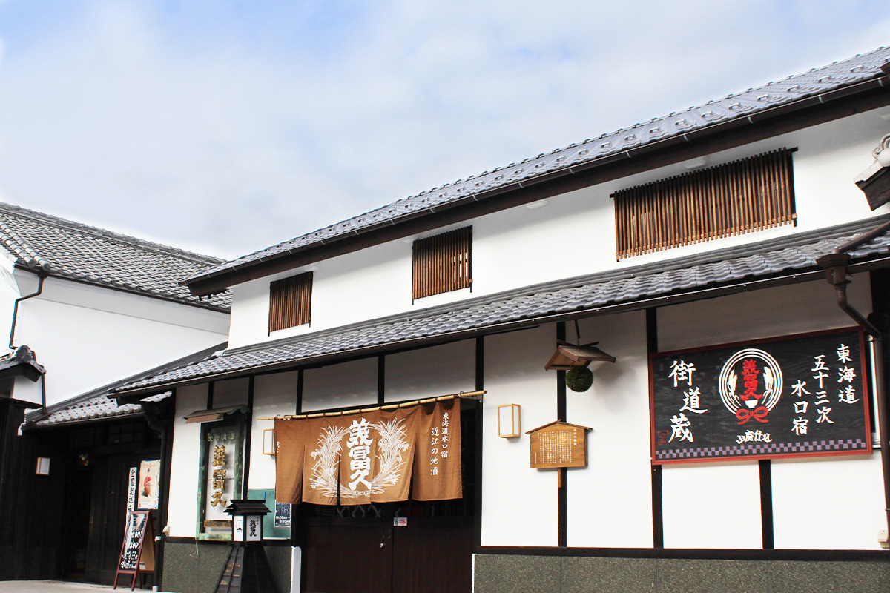
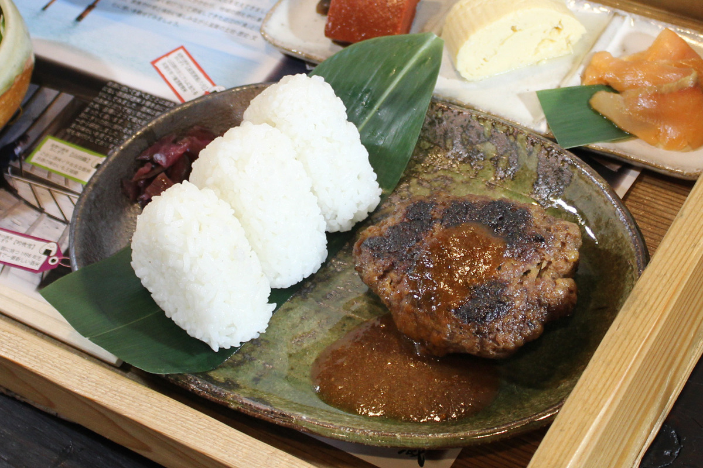
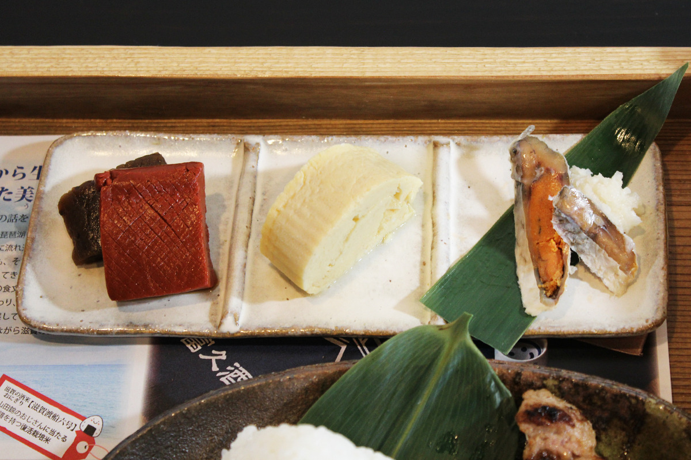
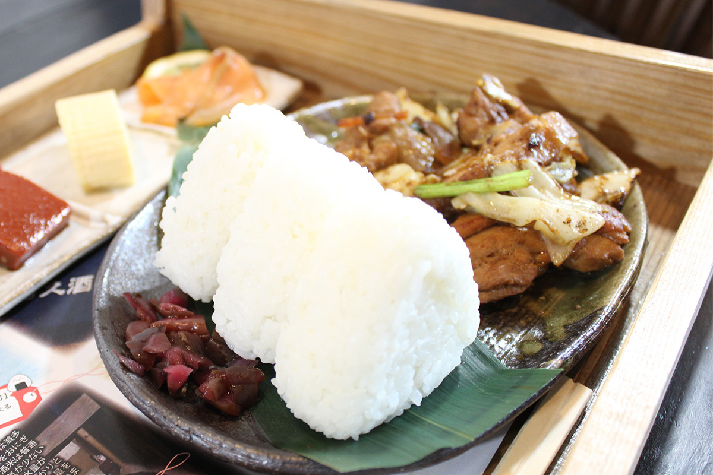
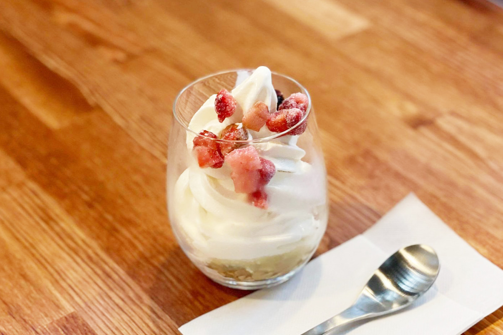

Префектура Сига · Кока · еда
Кафе «Кагура» в сакэварне «Мифуку»: обед из продуктов Сиги в старом складе

Сакэварня «Мифуку» в городе Кока на юге префектуры Сига варит сакэ больше ста лет. В 2021 году она открыла кафе «Кагура» в старом складе, и сюда стоит заехать даже тем, кто не пьёт.
Сакэварня
«Мифуку»: сто лет в Минакути
Сакэварню основали в 1917 году в Минакути, бывшем почтовом городке на юге префектуры Сига, который сегодня входит в город Кока. Её открыла младшая ветвь семьи Фудзии, отделившаяся от главного дома. Сейчас делом руководит глава в четвёртом поколении.
Здесь выпускают две марки сакэ. «Мифуку» варят старинным способом ямахай, и вкус у него мягкий, полный и глубокий. «Санрэнсэй» делают по технологии гиндзё: это свежее, фруктовое сакэ. Обе марки продаются по всей Японии и за границей. Каждый март сакэварня открывает ворота на весенний праздник, и на него приходят больше 5000 человек.
В сентябре 2021 года при сакэварне открылось кафе «Кагура». Название пишется иероглифами «аромат» и «склад»: это склад, где пахнет сакэ. Хозяева хотели, чтобы гости здесь не просто отдыхали, а знакомились с культурой и традициями сакэ, а сами японцы заново открывали для себя свою страну.
Здание
Склад, которому 80 лет
Под кафе отдали угол склада, построенного около 80 лет назад. До этого в нём хранили инвентарь.
«Лет пятнадцать назад я подумал: здание с таким характером, хорошо бы сделать здесь место, где люди могут посидеть. Обычно в это время года я езжу по всей стране, но из-за пандемии это стало невозможно. Зато появилось время заняться складом, и летом 2020 года мы решились и взялись за проект всерьёз»
глава сакэварни
Меню в кафе составлено так, чтобы блюда подходили к сакэ «Мифуку», но много и такого, что можно заказать без алкоголя. Продукты почти все из префектуры Сига, а значит, из старого края Оми, который всегда славился едой.
Главное блюдо
Котлета на сакэ-касу

Для котлеты берут фарш из двух марок мяса. Говядина «Окаки-гю» от хозяйства, которое само растит бычков, разделывает туши, торгует мясом и держит свои рестораны. Свинина фирменная, из соседнего с Кокой городка Хино, и её прозвали «свининой баумкухен». В фарш замешивают сакэ-касу, жмых от сакэ «Мифуку». Котлета выходит большой и сытной и хорошо идёт с сакэ этой же сакэварни.
В «Кагуре» продумана и посуда: еду подают в керамике Сигараки, а тарелку ставят на кодзи-бута. Это деревянный лоток, в котором на сакэварне выращивают кодзи, рисовый грибок для брожения.
Закуски
Три вкуса Оми

На тарелке три закуски. Первая это фунадзуси, главный деликатес Сиги. Вторая это омлет даси-маки по рецепту, отработанному в ресторане в киотском квартале Гион. Третья это два знаменитых конняку края Оми: красный и тот, что делают в Эйгэндзи. Все эти соленья и ферментированные закуски здесь считают обязательной парой к сакэ «Мифуку».
Фунадзуси готовят из карася, которого выдерживают в рисе. Это молочнокислое брожение: рис превращается в кисло-сладкую массу, похожую на йогурт, кислота не даёт размножаться другим бактериям, и рыба долго хранится. То же молочнокислое брожение лежит в основе ямахай, способа, которым славится «Мифуку»: так на сакэварне выращивают здоровые дрожжи.
Рис
Онигири из трёх поколений сакэ-риса

Префектура Сига считается родиной «Ватарифунэ», прародителя японских сортов риса для сакэ. Из его потомков в кафе лепят онигири. «Ямада-нисики» это самый известный сакэ-рис страны. «Ватарифунэ № 6» его отец. «Гинфубуки» вывели из «Ямада-нисики» и сорта «Тамасакаэ». Дед, отец и внук на одной тарелке: рекомендуем попробовать все три и сравнить.

Для сладкого в меню есть охлаждённый амадзакэ, мягкое мороженое и парфе на амадзакэ. Если будете в Сиге, «Кагура» хорошее место, чтобы пообедать продуктами префектуры и попробовать то, что умеет только сакэварня.
Кафе «Кагура» при сакэварне «Мифуку»
- Адрес
- префектура Сига, Кока, Минакути-тё Нисибаясигути, 3-2
- Часы работы
- 11:00–16:00 (обед 11:00–14:00)
- Выходные
- четверг
- Сайт
- mifuku.co.jp